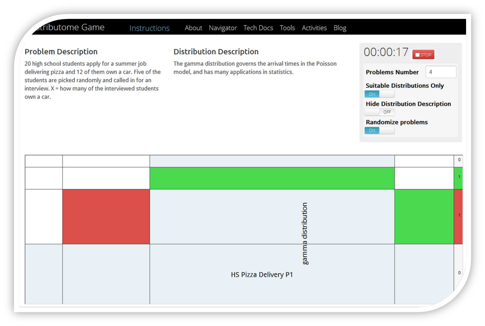
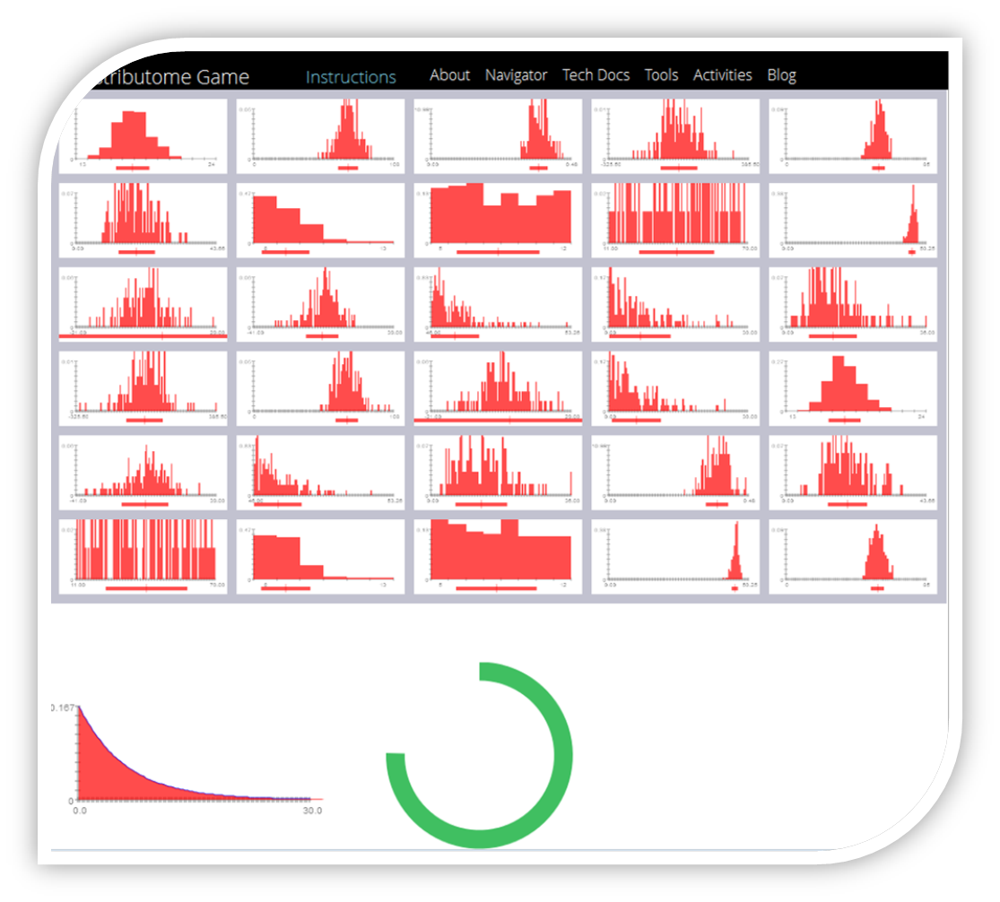

Home
Tools »
Complete DB View
Navigator
About
Tech Docs
Blog
Distributome Games
Distributome Game 1
Identifying probability distributions as appropriate models of specific processes

Distributome Game 2
Matching probability density curves with sample histograms

 www.Distributome.org
www.Distributome.org